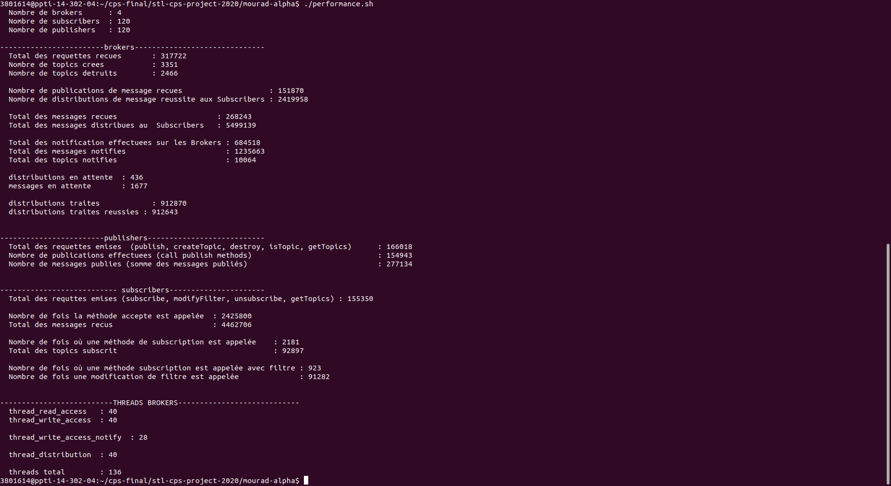
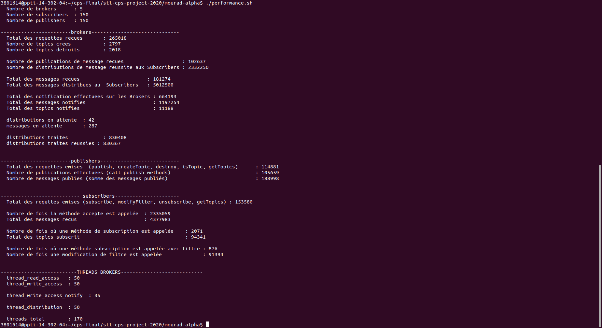
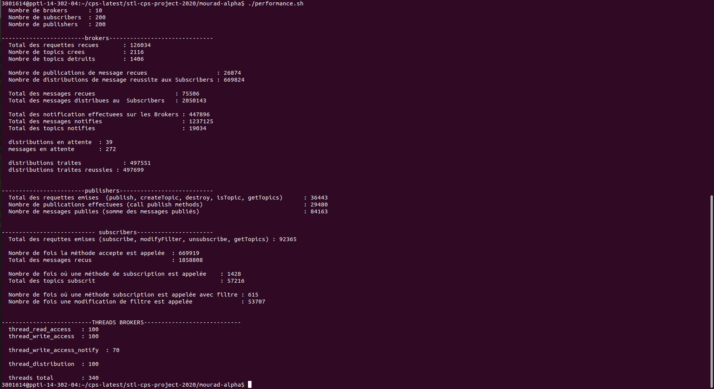

Compte Rendu CPS
Réalisé par :
DIALLO Alpha Issiaga / TOUATI Mourad
1. Préparation de l’étape 3
Avant d’entamer l’étape 3 du projet, nous avons d’abord pris en
considération les remarques fourni dans la fiche d'évaluation en ajoutant
entres autres :
- Des tests unitaires avec Junit 4;
-
La gestion de la concurrence au sein du courtier avec l’utilisation des
nos propre classes : MyConcurrentHashMap et
MyConcurrentLinkedQueue qui autorisent plusieurs
opérations de lecteur au même temps mais une seule opération d'écriture
à la fois (Ceci est garanti avec
ReentrantReadWriteLock qui nous offre les méthodes
writeLock readLock );
-
L’utilisation de pools de threads (distinguer les opérations de lecture
et d’écriture) pour apporter du parallélisme;
-
Assurer un accès en exclusion mutuel aux sections critiques ( création
d’un topic par exemple );
-
Enfin, nous avons proposé des tests d’intégrations qui couvrent toutes
les méthodes des interfaces de composants.
2. Structure du projet
- Le dossier doc contient la javadoc ainsi que le compte rendu du projet.
-
Le dossier mourad-alpha contient le code source du projet :
- Un build.xml pour ant.
- Le dossier lib qui contient (bcm.jar, javassist.jar, jing.jar, commons-math3-3.6.1.jar, jcip-annotations.jar, junit.jar) nécessaire au lancement du projet.
- Les scriptes pour les tests de performance.
- Le dossier src pour les classes.
3. Etape 3 - Répartition du courtier
l’objectif de cette étape est d’avoir une configuration où nous avons
plusieurs JVMs tel que dans chacune d’elle résident un composant courtier,
des composants souscripteurs et des composants publieurs, les composants
courtier sont reliés entre eux afin d’acheminer des messages publiés dans
une JVM A par un publieurs vers des souscripteurs qui se trouvent dans une
JVM B. Afin de parvenir à cet objectif, nous avons opté pour une
architecture maillé où chaque broker est connecté aux autres broker qui se
trouvent dans des JVMs différentes.
Nous avons modifié le code du Broker en ajoutant des ports (InBoundPortNotification
/ OutBoundPortNotification ) qui implémente l’interface
NotificationCI pour la notification, cette dernière
concerne les opérations (Création d’un topic, publication de message(s), destruction d’un
topic). Afin de gérer les notification qui peuvent arriver à tout moment nous
avons un pool de thread (pour les opérations d’écriture) dédié à cela,
l’index writeExecutorIndex qui se trouve
InBoundPortNotification permet d’identifier ce dernier
dans le broker.
La modification concerne également le constructeur du composant Broker qui
prendra dorénavant en paramètres un tableau des URIs des autres Brokers,
ce qui lui permet de se connecter à eux.
4. Etape 4 - Tests de performance
Afin de réaliser cette étape, nous avons créé deux composants ( PublisherPerformance et SubscriberPerformance ) avec des scénarios qui couvrent toutes les méthodes des composant publieurs et souscripteurs, nous avons également randomisé ces scénarios afin d’avoir des exécutions différentes pour chacune des instances de ces composants.
à partir de la nouvelle version du Broker ainsi que les composants PublisherPerformance et SubscriberPerformance, nous avons créé 3 DCVM :
- DCVMPerformance3brokers: 3 Brokers avec des composants PublisherPerformance et SubscriberPerformance.
- DCVMPerformance4brokers: 4 Brokers avec des composants PublisherPerformance et SubscriberPerformance.
- DCVMPerformance5brokers: 5 Brokers avec des composants PublisherPerformance et SubscriberPerformance.
Lors de l'exécution d’un DCVM on sauvegarde les log de chaque composant et grâce au traitement qui se trouvent dans le scripte performance.sh, on arrive à obtenir les résultats qui se trouvent dans les figures suivantes.
Nous avons effectué nos tests selons deux métriques principale :
- Total des requêtes émise par les publishers + Total des requêtes émise par les subscribers = Total des requêtes reçu par les Brokers
- La distribution en attente doit être minime : distribution en attente / Total des notifications effectuées sur les brokers = 100 %
Nous avons commencé à tester nos DCVM avec 100 Publishers et 100 Subscribers nous avons remarqué des incohérence avec les métriques, ensuite nous avons effectué d’autres tests jusqu'à en arriver au résultat où 30 Publishers et 30 Subscribers permet d’obtenir de très bon résultat. (On arrive à avoir un échange de plus de 5 millions de messages au bout de 35 s de l'exécution )
Remarques:
- Nous avons constaté que les fenêtres des composants ralentissent beaucoup l’exécution, de ce fait, nous avons décidé de ne plus l'afficher.
- Les tests ont été fait sur les machine de l’université
Résultat de DCVMPerformance3brokers :
Résultat de DCVMPerformance4brokers :

Résultat de DCVMPerformance5brokers :

Nous avons même testé notre projet avec un DCVM de 10 Brokers avec 20 Publishers et 20 Subscribers, les résultats suivant :

5. Manuel d’utilisation
- ant dist : Pour la compilation
- choisir une configuration :
- Configuration avec 3 Brokers :
- ./start-cyclicbarrier-performance-3-broker&
- ./start-gregistry-performance-3-broker&
- ./start-performance-3-broker-all
- Configuration avec 4 Brokers :
- ./start-cyclicbarrier-performance-4-broker&
- ./start-gregistry-performance-4-broker&
- ./start-performance-4-broker-all
- Configuration avec 5 Brokers :
- ./start-cyclicbarrier-performance-5-broker&
- ./start-gregistry-performance-5broker&
- ./start-performance-5-broker-all
- /performance.sh : Pour afficher les résultat des tests.